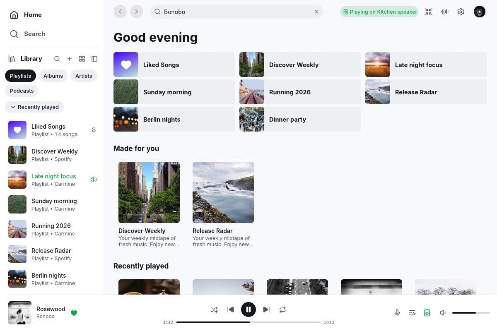
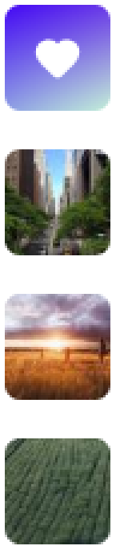
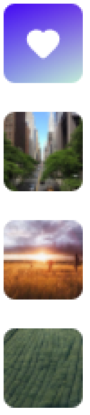
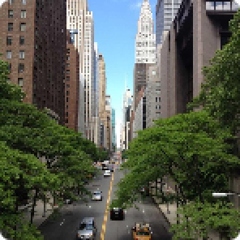
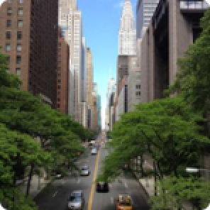

Sharp covers scaled to their pixels
Covers are decoded and scaled on the CPU to the pixels they cover, from artwork asked for at a quarter more than that, and drawn through mipmaps. Library rows stop using Spotify's 64 pixel thumbnail. The demo's artwork is photographs, so the difference is subtle at full size; the zoomed crops show it.

Zoomed without smoothing (light, 1200x800)



